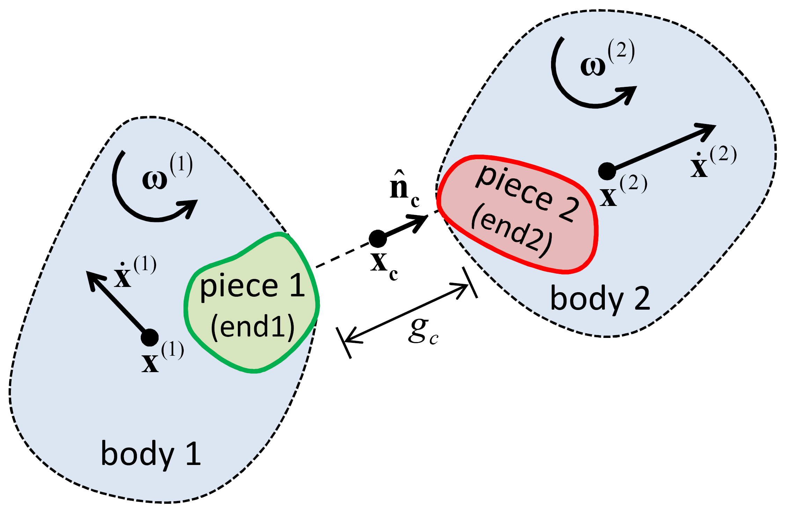
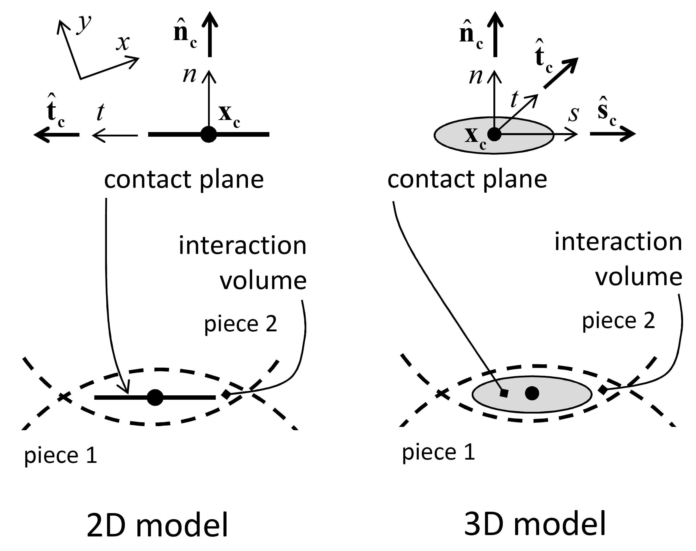
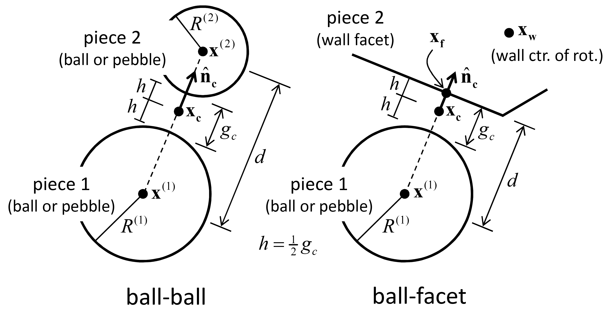
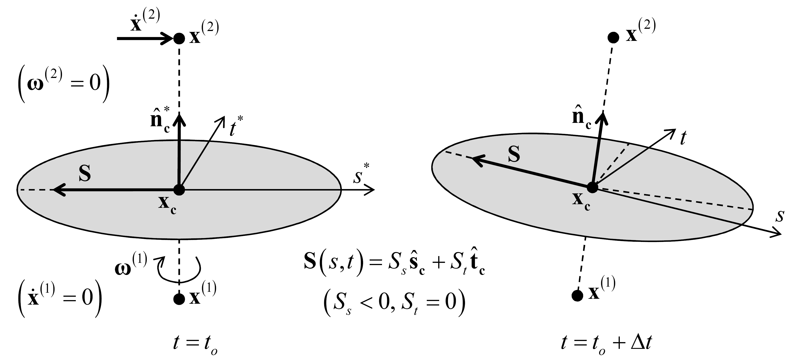
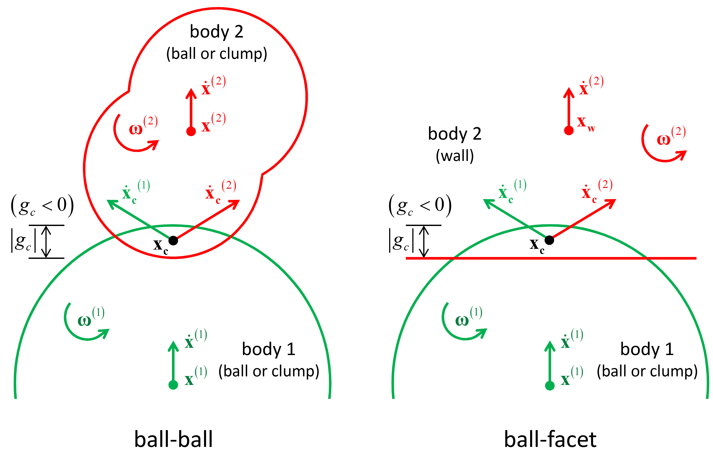
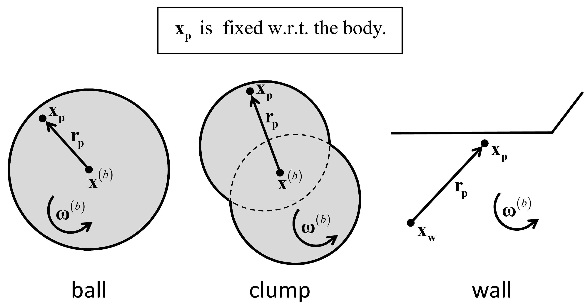
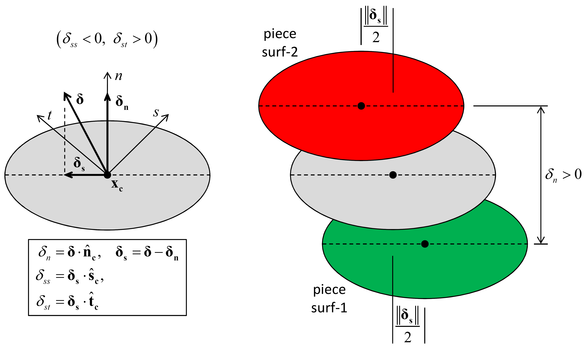
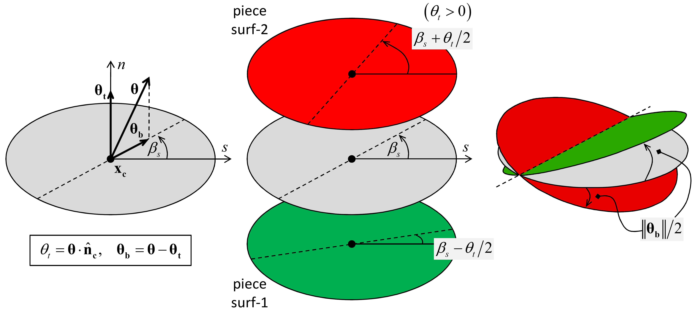
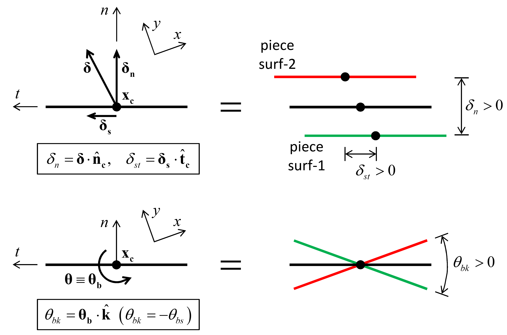

接触求解
当循环序列中检测到新接触时，在力-位移计算之前进行接触解析。在接触解析过程中，更新接触状态变量（见 表（table））。本节给出这些变量的定义，并描述其计算过程。
图 1（Figure 1） 所示的接触是在两个物体的部件之间创建的。每个接触都有两个端点，即 end1 和 end2，其关联的部件和物体分别标记为 1 和 2。物体是刚性的；因此，物体 \((b)\) 的运动由其转动速度 \(( \pmb{ω}^{(b)} )\) 及其平动速度 \(( \dot{\mathbf{x}}^{(b)} )\) 描述，后者是质心 \(( \mathbf{x}^{(b)} )\) 的速度。


图 1：两个物体的部件之间的一个接触。
需要首先更新的接触状态变量为：接触的有效惯性质量 \(( m_c )\)；接触平面的位置 \(( \mathbf{ x_c } )\)、法向方向 \(( \hat{\mathbf{n}}_\mathbf{c} )\) 和坐标系 \(( nst )\)；以及接触间隙 \(( g_c )\)，即分隔部件表面的最小带符号距离。接触质量由下式给出
式中，\(m^{(b)}\) 为物体 \((b)\) 的质量。位置、法向方向与间隙的计算取决于接触附近两个接触部件的表面几何形状（将在下文“接触平面（Contact Plane）”一节中描述）。
上述各量更新之后，接触模型负责根据更新后的接触间隙更新接触的活动状态。用于确定接触活动性的确切判据取决于各接触模型的具体实现。如果未发现接触处于活动状态，则执行附加检查，以评估在当前条件下它是否可能在不久的将来变为活动状态。活动接触与可能变为活动的接触都参与时步估算过程。如果发现接触处于活动状态，则计算定义部件表面相对运动的变量（如“接触处的相对运动（Relative Motion at a Contact）”一节所述）。
运动学信息将在接下来的两节中描述，这两节定义接触平面，并描述接触处部件表面的相对运动。由于球颗粒与子颗粒具有相同的形状，所有接触类型均可不失一般性地用球颗粒-球颗粒和球颗粒-面片这两种组合来描述。球颗粒-球颗粒接触类型包括球颗粒-球颗粒、球颗粒-子颗粒和子颗粒-子颗粒；球颗粒-面片接触类型包括球颗粒-面片和子颗粒-面片。
| 属性 | 说明 |
|---|---|
| \(m_c\) | 有效惯性质量 |
| 接触平面： | |
| \(\mathbf{ x_c }\) | 接触平面位置 |
| \(\hat{\mathbf{n}}_\mathbf{c}\) | 接触平面法向方向 |
| \(\hat{\mathbf{s}}_\mathbf{c}\) | 接触平面坐标系（\(s\) 轴） （二维模型：\(\;\hat{\mathbf{s}}_\mathbf{c} \equiv -\hat{\mathbf{k}}\)） |
| \(\hat{\mathbf{t}}_\mathbf{c}\) | 接触平面坐标系（\(t\) 轴） |
| \(g_c\) | 接触间隙 |
| 相对运动： | |
| \(\dot{\pmb{δ}}\) | 相对平动速度 |
| \(\dot{\pmb{θ}}\) | 相对转动速度 |
| \(\Delta\delta_n\) | 相对法向位移增量 |
| \(\Delta\pmb{δ}_\mathbf{s}\) | 相对剪切位移增量 \((\Delta\delta_{ss},\Delta\delta_{st})\) （二维模型：\(\Delta\delta_{ss}\equiv 0\)） |
| \(\Delta\theta_t\) | 相对扭转转动增量 （二维模型：\(\Delta \theta _{t} \equiv 0\)） |
| \(\Delta\pmb{θ}_\mathbf{b}\) | 相对弯曲转动增量 \((\Delta\theta_{bs},\Delta\theta_{bt})\) （二维模型：\(\Delta \theta _{bk} =-\Delta \theta _{bs},\Delta \theta _{bt} \equiv 0\)） |
接触平面
接触为两个部件之间提供一个交界面（见 图 2（Figure 2））。该交界面由一个接触平面构成，其位置为 \(( \mathbf{ x_c } )\)、法向方向为 \(( \hat{\mathbf{n}}_\mathbf{c} )\)、坐标系为 \(( nst )\)。接触平面位于两个部件的相互作用体积（间隙或重叠）的中心，与两个部件相切定向，并经过旋转，以确保接触位置处部件表面的相对运动相对于接触平面保持对称。


图 2：二维与三维模型的接触平面坐标系。
接触平面位于两个部件的相互作用体积的中心，由部件 1 指向部件 2，并与部件 1 相切定向。接触平面的位置 \(( \mathbf{ x_c } )\) 与法向方向 \(( \hat{\mathbf{n}}_\mathbf{c} )\) 由下式给出（见 图 3（Figure 3））：
式中，\(\mathbf{x}^{(b)}\) 与 \(R^{(b)}\) 分别为球颗粒 \((b)\) 的中心与半径；\(\mathbf{x_f}\) 是墙面片上距 \(\mathbf{x}^{(1)}\) 最近的点；\(\mathbf{x_w}\) 是墙的旋转中心，\(g_c\) 是接触间隙。接触间隙是分隔部件表面的最小带符号距离，若表面重叠则间隙为负。


图 3：两种基本接触 类型（球颗粒-球颗粒与球颗粒-面片）的接触平面位置与法向方向。
接触平面坐标系 \(( nst )\) 的定向使得 \(n\) 与接触法向方向重合，而 \(s\) 与 \(t\) 是平面上的正交坐标，且 \(\hat{\mathbf{n}}_\mathbf{c} = \hat{\mathbf{s}}_\mathbf{c} \times \hat{\mathbf{t}}_\mathbf{c}\)。对接触平面坐标系进行平移与旋转，以确保接触位置处部件表面的相对运动相对于接触平面保持对称（如 图 7（Figure 7） 和 图 8（Figure 8） 所示）。平移通过方程 (2) 更新位置与法向方向。对于二维模型，以下约束使旋转成为隐式：
接触位置与法向方向位于 \(xy\) 平面内，使得
(3)\[\begin{split}\begin{array}{l} {\mathbf{x_c} =\mathbf{x_{c}} (x,y,z)=x_{cx} {\kern 1pt} \hat{\mathbf{i}}+x_{cy} {\kern 1pt} \hat{\mathbf{j}}+x_{cz} {\kern 1pt} \hat{\mathbf{k}}\; \; \left(x_{cz} \equiv 0\right)} \\[3mm] {\hat{\mathbf{n}}_\mathbf{c} =\hat{\mathbf{n}}_\mathbf{c} (x,y,z)=n_{cx} {\kern 1pt} \hat{\mathbf{i}}+n_{cy} {\kern 1pt} \hat{\mathbf{j}}+n_{cz} {\kern 1pt} \hat{\mathbf{k}}\; \; \left(n_{cz} \equiv 0\right).} \end{array}\end{split}\]\(nt\) 轴位于 \(xy\) 平面内，使得
(4)\[ \hat{\mathbf{t}}_\mathbf{c} = \hat{\mathbf{k}} \times \hat{\mathbf{n}}_\mathbf{c}.\]
对于三维模型，\(s\) 轴初始与全局 \(x\) 或 \(y\) 方向在接触平面上的投影对齐（取其中与 \(\hat{\mathbf{n}}_\mathbf{c}\) 不平行者），随后旋转更新 \(s\) 轴的方位：
式中，第一次旋转（得到 \(\mathbf{s}_{1}\)）绕新旧平面的公共线进行，第二次旋转（得到 \(\mathbf{s}_{2}\)）绕新的法向方向进行；星号（\(*\)）表示上一时步结束时的值；\(\pmb{ω} ^{(p)}\) 是部件 \((p)\) 的转动速度；\(\tilde{\pmb{ω} }\) 是两个部件绕新法向方向的平均转动速度。请参阅 图 4（Figure 4），并注意向量 \(\mathbf{S}\) 随平面一同旋转（如同它被标记在平面上一样）。


图 4：接触平面的方位，以及平面上一个向量在底部部件旋转 与顶部部件平移作用下的响应。
位于接触平面 \((\mathbf{S})\) 上的向量可在接触平面坐标系中由以下关系式表示：
接触处的相对运动
接触处部件表面的相对运动由相对平动速度 \(( \dot{\pmb{δ}} )\) 和相对转动速度 \(( \dot{\pmb{θ}} )\) 描述：
在该表达式中，\(\dot{\mathbf{x}}_\mathbf{c}^{(b)}\) 为体 \((b)\) 在接触位置处的平动速度：
式中，\(\dot{\mathbf{x}}^{\left(b\right)}\) 为体 \((b)\) 的平动速度；\(\pmb{ω} ^{\left(b\right)}\) 为体 \((b)\) 的转动速度；\(\mathbf{x_c}\) 为接触位置，\(\mathbf{x}^{\left(b\right)}\) 为体 \((b)\) 的形心（若该体为球颗粒或刚性团簇）或旋转中心（若该体为墙）。请参阅 图 5（Figure 5），并注意，在方程 (9) 中令 \(\mathbf{x_p} =\mathbf{x_c}\) 即可得到该表达式。接触位置定义了一个相对于各体固定的点，因此 \(\dot{\mathbf{x}}_\mathbf{c} ^{(b)}\) 为该点在体 \((b)\) 中的平动速度。


图 5：两种基本接触类型（ball-ball 和 ball-facet）下接触处的体运动。
每个体都有一个参考点（\(\mathbf{x}\)）和一个转动速度 （\(\pmb{ω}\)）。该参考点相对于体保持固定。球颗粒或刚性团簇的参考点 为该体的形心，墙的参考点则为 旋转中心。相对体固定的点 \(\mathbf{x_{p}}\) 的 平动速度由下式给出
式中，\(\mathbf{r_{p}}\) 为该点的相对位置，\(\mathbf{x}^{\left(b\right)}\) 为体（\(b\)）的形心，\(\mathbf{x_{w}}\) 为墙的旋转中心。


图 6：用于描述三种基本体类型（球颗粒、刚性团簇和墙）体运动的 运动学变量。
相对平动速度可表示为
式中，\(\dot{\pmb{δ }}_\mathbf{n}\)（\(\dot{\delta}_{n} >0\) 表示正在分离）和 \(\dot{\pmb{δ} }_\mathbf{s}\) 分别为相对接触平面的法向和 切向相对平动速度，下标 \(n\) 和 \(s\) 分别对应 法向和剪切作用（请参阅 图 7（Figure 7） 和 图 9（Figure 9）——接触在相互作用 体积内居中，可确保相对位移相对于接触平面保持对称）。 对于二维模型，方程 (10) 满足条件 \(\dot{\delta}_{ss} \equiv 0\)。
相对转动速度可表示为
式中，\(\dot{\pmb{θ} }_\mathbf{t}\)（\(\dot{\theta }_{t} >0\) 如图 图 8（Figure 8） 所示） 和 \(\dot{\pmb{θ} }_\mathbf{b}\) 分别为相对接触平面的法向和 切向相对转动速度，下标 \(t\) 和 \(b\) 分别对应 扭转和弯曲作用（请参阅 图 8（Figure 8） 和 图 9（Figure 9）——方程 (5) 中的第二次旋转确保相对 转动相对于接触平面保持对称）。对于二维模型，方程 (11) 满足以下条件：\(\dot{\pmb{θ} }_\mathbf{t} \equiv \mathbf{0}\)，且 \(\dot{\pmb{θ} }_\mathbf{b}\) 与 \(z\) 轴对齐，从而 \(\dot{\theta }_{bt} \equiv 0\) 且 \(\dot{\theta }_{bk} =-\dot{\theta }_{bs}\)。
在一个时步 \(\Delta t\) 内，接触处的相对位移增量和相对转动增量 为
式中，\(\Delta \delta _{n}\) 为相对法向位移增量，\(\Delta \pmb{δ} _\mathbf{s}\) 为相对剪切位移增量，\(\Delta \theta _{t}\) 为相对 扭转转动增量，\(\Delta \pmb{θ} _\mathbf{b}\) 为相对弯曲转动 增量。对于二维模型，方程 (12) 满足以下条件： \(\Delta \delta _{ss} \equiv \Delta \theta _{t} \equiv \Delta \theta _{bt} \equiv 0\)，且 \(\Delta \theta _{bk} =-\Delta \theta _{bs}\)。


图 7：接触的运动学示意图，显示接触平面及其相对位移和部件表面的 运动。


图 8：接触的运动学示意图，显示接触平面及其相对转动和部件表面的 运动。


图 9：二维模型中接触的运动学示意图，显示接触平面及其相对 转动和部件表面的运动。
| 这些内容对您有帮助吗？… | FLAC3D © 2019, Itasca | 原文更新于 2020 年 10 月 8 日 |